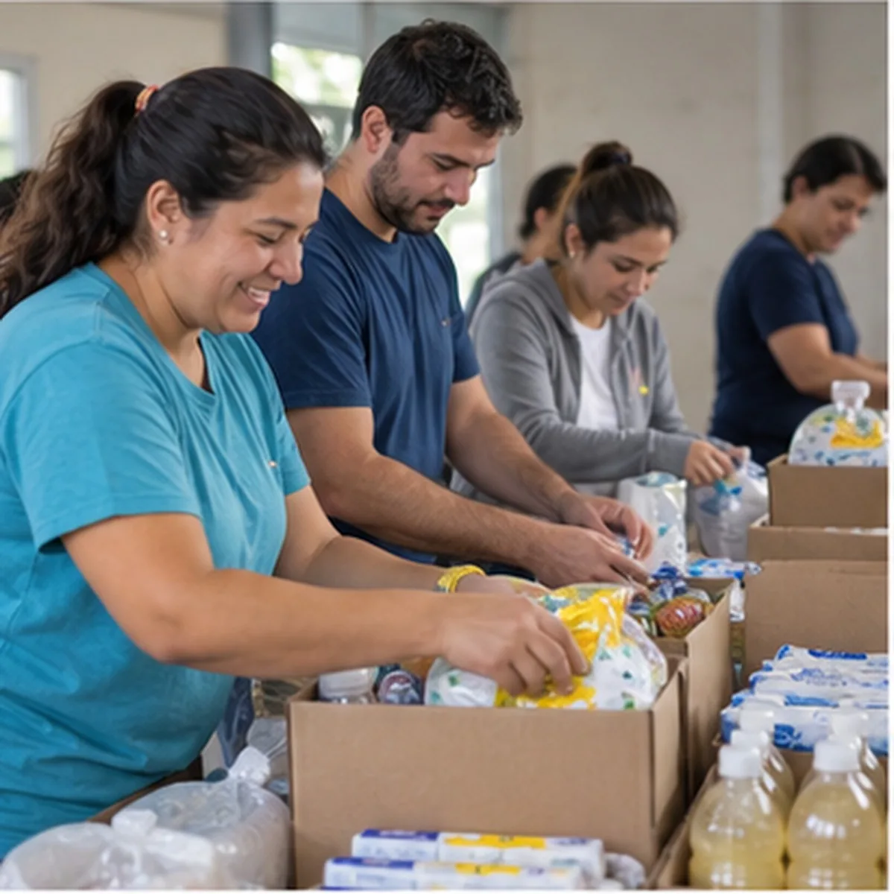
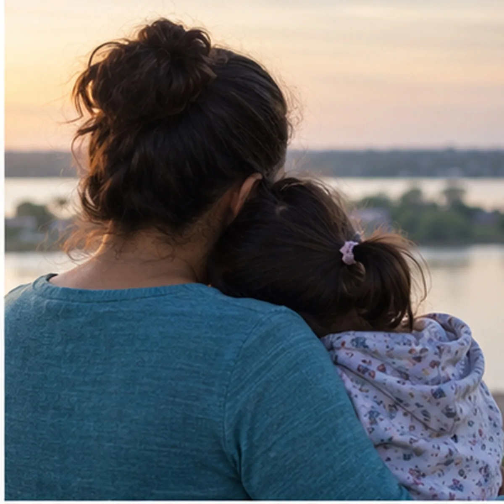
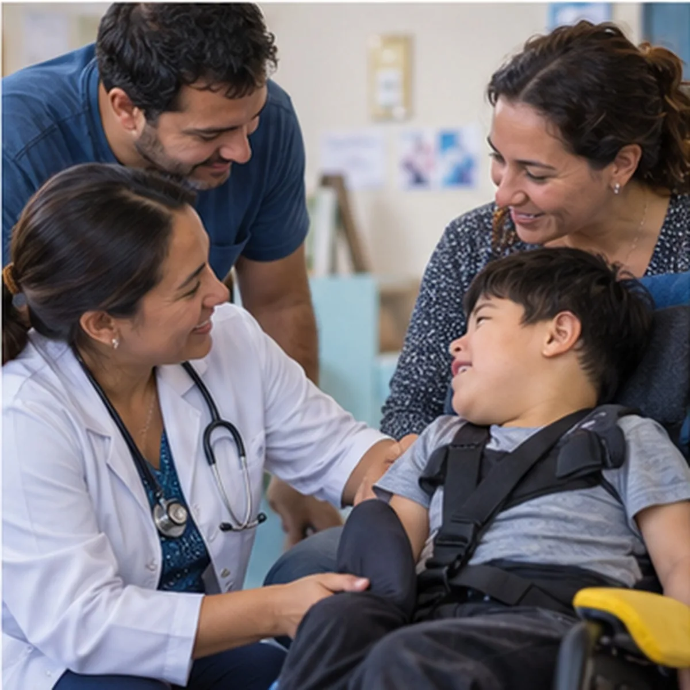
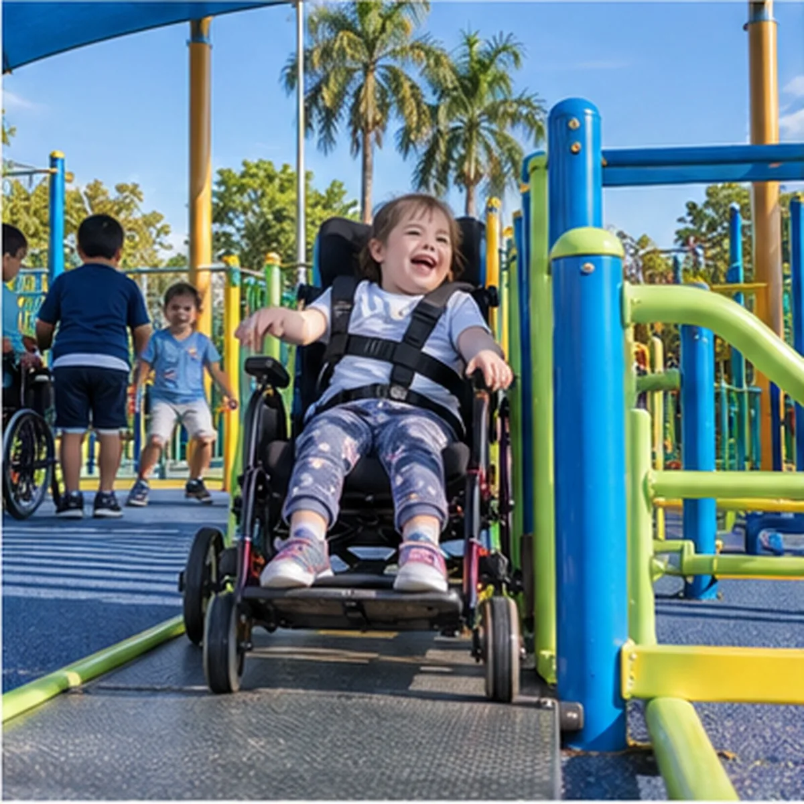
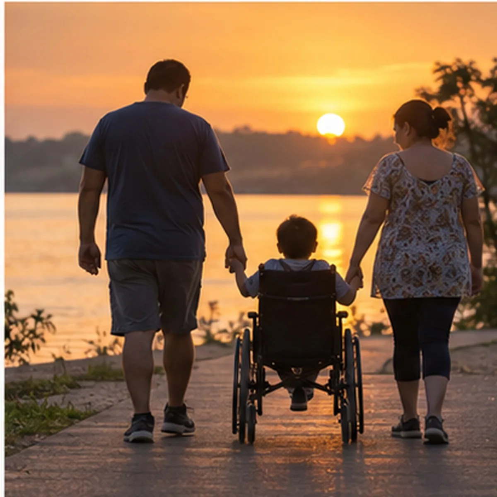
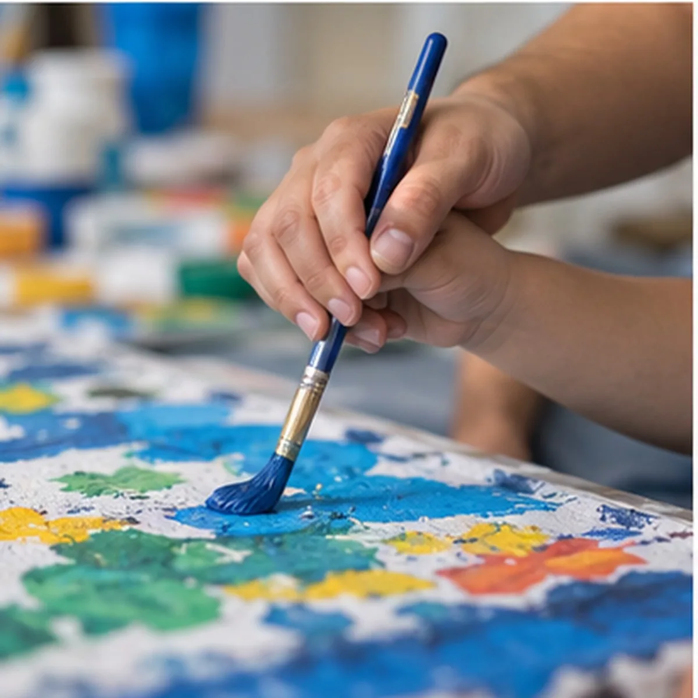
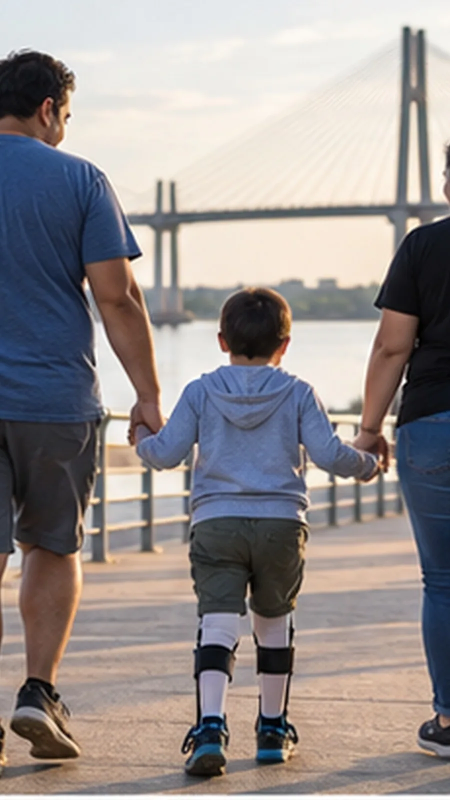
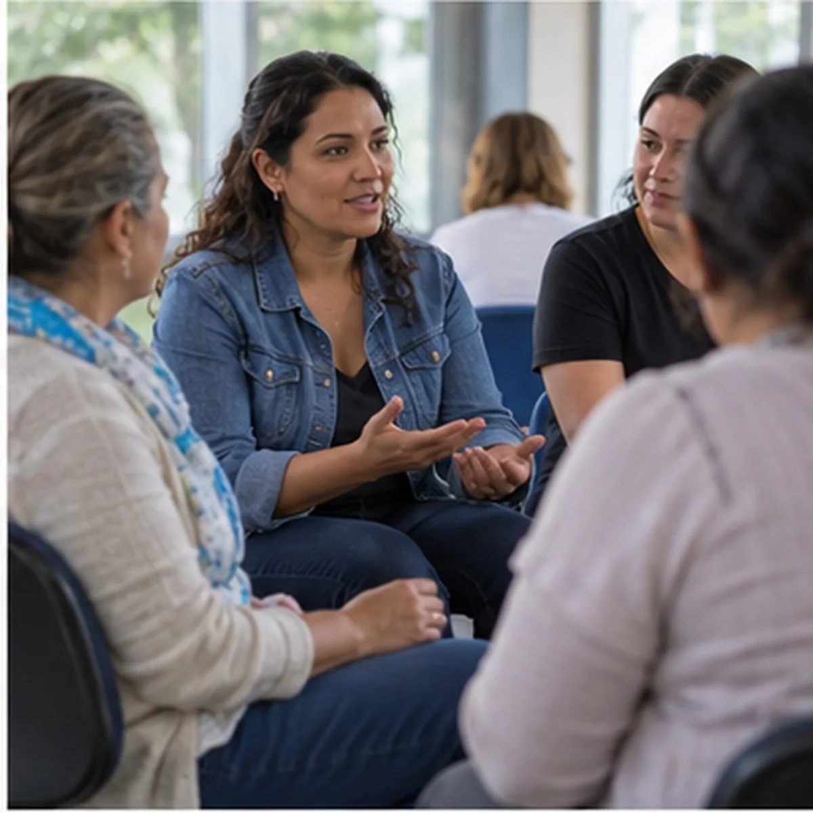

+10 años concientizando sobre epilepsia y parálisis cerebral
Lo que hacemos por cada familia

01
Ayuda con lo básico
Alimentos, insumos y lo que haga falta cuando lo básico no alcanza.

02
Contención y compañía
Escuchamos, orientamos y estamos cerca en cada etapa, para que ninguna familia lo atraviese sola.

03
Nexo con otras instituciones
Conectamos a cada familia con quien puede ayudarla: salud, educación y organismos públicos.

04
Concientización e inclusión
Hablamos de epilepsia y parálisis cerebral para que haya menos prejuicios y más lugares para todos.

Por quién nació
Una fundación que nació en casa
Esta fundación nació por mi hijo, que tiene parálisis cerebral y epilepsia refractaria. Lo que aprendimos con él hoy acompaña a otras familias.
La familia fundadora
Sabemos lo que es buscar respuestas, hacer trámites y sostener el día a día. Por eso la fundación camina al lado de otras familias de Corrientes que están en ese mismo camino.
Lo que ya hicimos, en más de diez años


01 · Concientización
Epilepsia y parálisis cerebral, dichas en voz alta
Desde hace más de diez años salimos a contar qué son la epilepsia y la parálisis cerebral, para que en Corrientes haya más información, menos prejuicios y más inclusión.
26 de marzo Día Púrpura, por la epilepsia
6 de octubre Día Mundial de la Parálisis Cerebral
Parálisis cerebral
Trastornos permanentes del movimiento y la postura, causados por una lesión en el cerebro en desarrollo.
Epilepsia refractaria
La que sigue con crisis aun después de probar dos medicamentos adecuados.

02 · Conferencias
Las conferencias del Dr. Lucas Bongioni, en Corrientes
Ya las hicimos
Trajimos al Dr. Lucas Bongioni a Corrientes para que las familias pudieran escucharlo de primera mano, hacer sus preguntas y llevarse herramientas para el día a día.
Entregas de alimentos e insumos, compañía en trámites y consultas, encuentros para que los chicos jueguen y las familias se conozcan. Todo eso, sostenido durante años.